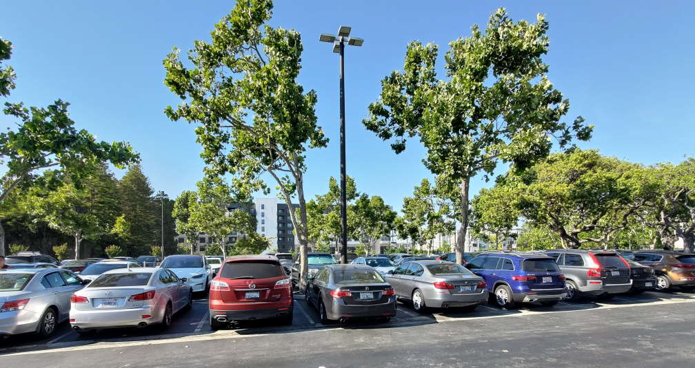
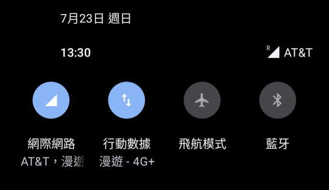
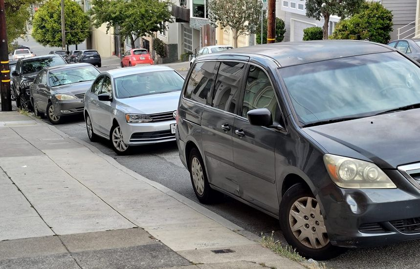
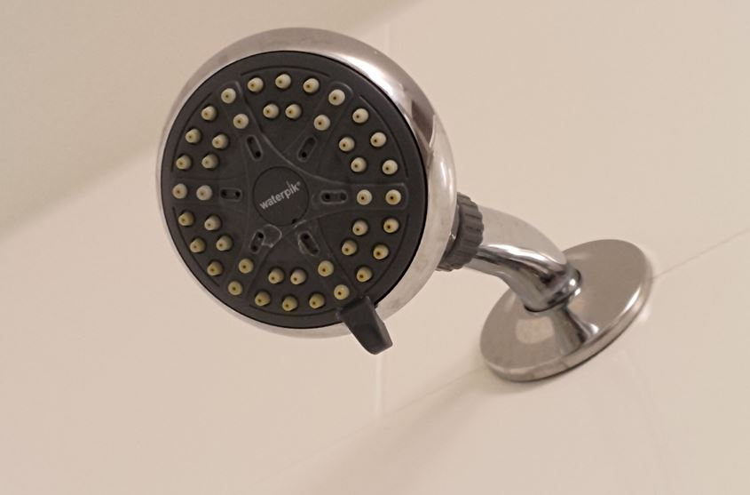
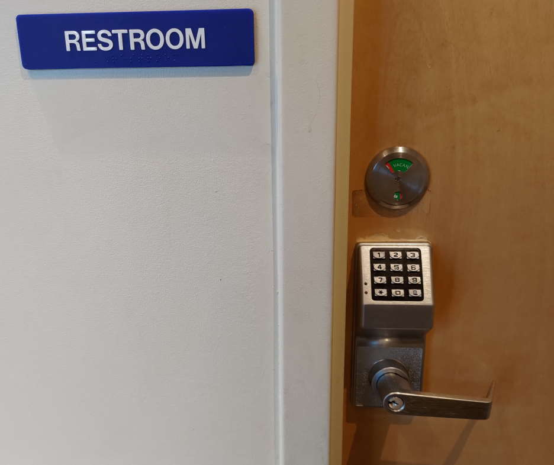

[旅遊] 在美國(舊金山)的觀察與發現
Contents
單位
汽油單位: 加侖
里程單位: mile
溫度單位: F
速度單位: MPH
高速公路限速65MPH，大約是104KM/H
REGULAR 汽油，每加侖5 美元，約40元台幣一公升
稅與小費
到餐廳都要給小費15~20%，給18%還算OK，都是先刷一筆含稅的，再手寫一次，填要給多少小費。
稅率不知道是多少，好像食物跟物品不一樣稅率?但應該都是9%左右
交通
國道不額外收費，除非走最內側。 過橋"金門大橋"現場不收費了，如果沒有事前登記，事後也可以補登記信用卡。
美國人似乎沒有倒車入庫的習慣，比較習慣車頭朝內，所以退出停車格的時候都是車尾出來，感覺沒有很順，不知道為什麼大家都這樣。

有些洲的前車牌好像不用掛。
優勝美地 網路不好，我用T mobile SIM 卡會漫遊到AT&T，靠近商店的的時候網路就好了，可能是為了方便大家刷卡，畢竟不接受現金。

閘道管制燈號變化很好笑，因為閘道不只一個車道，所以會交替放行，看起來就是在亂閃。
坡道停車，前輪會固定轉一個方向(如圖)

長途飛機
通常是起飛後不久，就會吃第一餐，降落前三小時會吃第二餐，如果中間有醒著，還會有其他隱藏版食物。
往東會有太陽，所以空服員會要求關遮陽板，讓機艙內保持黑暗。 凌晨一點往西飛，12小時都是晚上，沒有這樣要求。
長程飛機，靠走道位置比較好，方便上廁所或起身活動，反正大部分時候都沒有景可以看。
商店觀察
飯店固定蓮蓬頭

Merced的麥當勞與星巴克上廁所"要問店員密碼"，可能是怕遊民使用

ROSS 商店的手推車，為了要避免被推出門外，有一個很高的桿子在車上，但好像有人沒注意到，想要推出去就卡在門上。